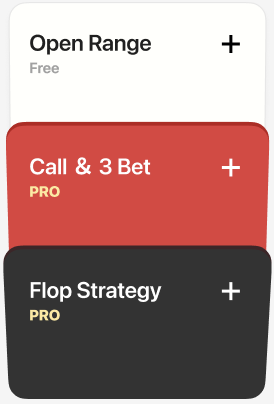
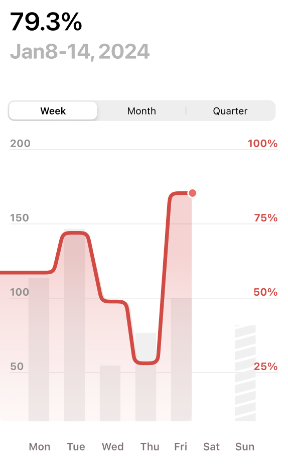
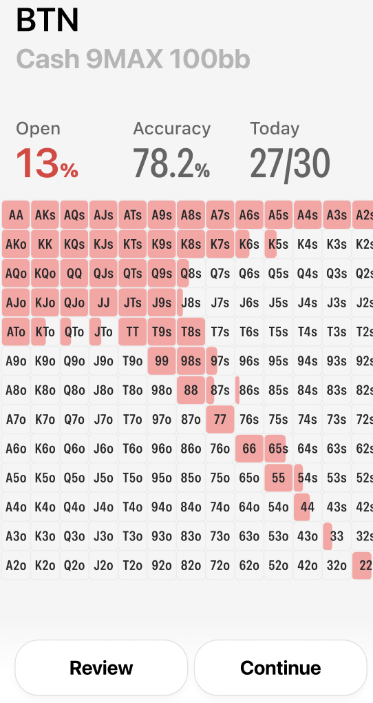
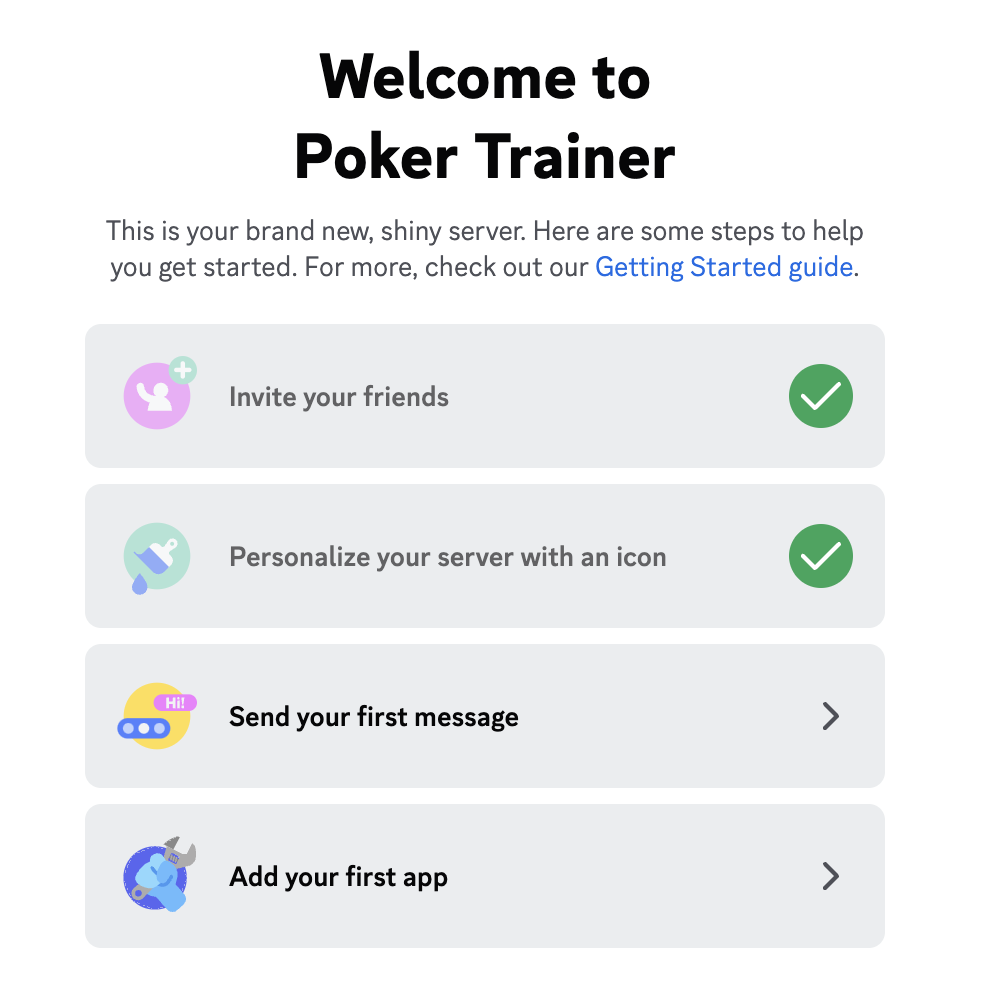

pokerAce
Introducing PokerAce: Your Ultimate GTO Poker Training Companion!
Master Every Scenario
Dive deep into poker strategy with tailored training modules including Open Range, Call & 3Bet, Flop Strategy, and Heads-Up play. Each module is crafted to challenge your decision-making and sharpen your instincts, ensuring you're prepared for any situation at the table.


Data-Driven Insights
PokerAce doesn't just train you; it transforms you. Our sophisticated analytics provide a deep dive into your playing style, offering personalized feedback and actionable insights. Track your progress, identify areas for improvement, and watch as your game evolves with every hand.
Error Correction and Memory Reinforcement
Every mistake is an opportunity for growth with PokerAce. Our intelligent error-tracking system not only records your slip-ups but also cleverly integrates them into your daily training plans. This continuous loop of feedback and practice ensures that you not only recognize your errors but also master the correct strategies to avoid them in the future.

